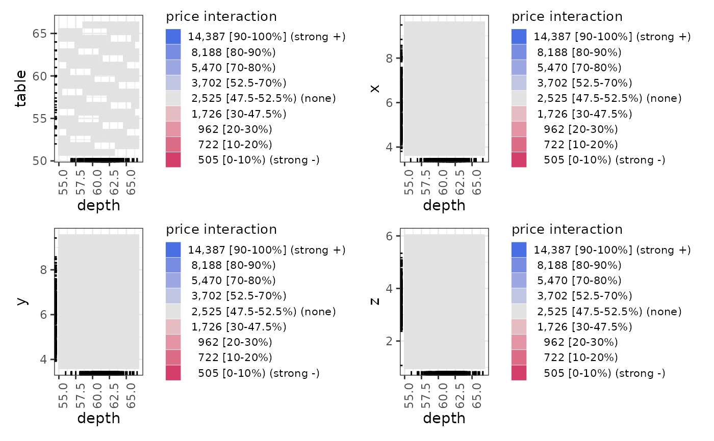
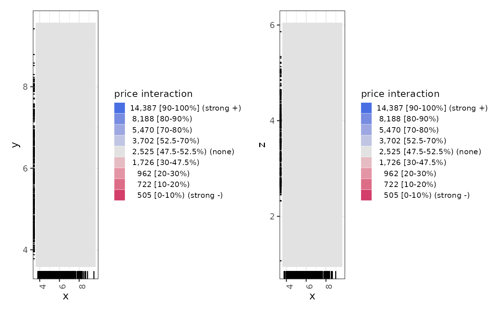
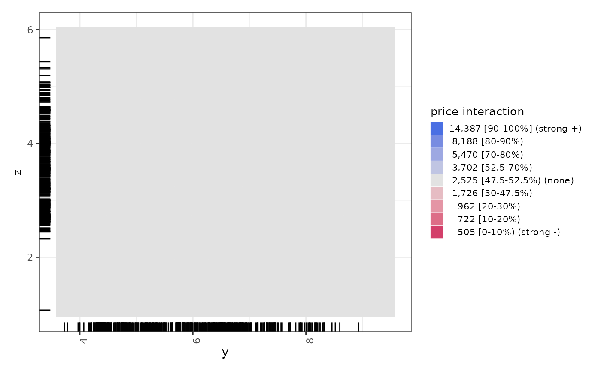

This is the central function that manages the creation of ALE data and plots
for two-way ALE interactions. For simple one-way ALE, see ale().
See documentation there for functionality shared between both functions.
For details, see the introductory vignette for this package or the details and examples below.
For the plots, n_y_quant is the number of quantiles into which to
divide the predicted variable (y). The middle quantiles are grouped specially:
The middle quantile is the first confidence interval of
median_band_pct(median_band_pct[1]) around the median. This middle quantile is special because it generally represents no meaningful interaction.The quantiles above and below the middle are extended from the borders of the middle quantile to the regular borders of the other quantiles.
There will always be an odd number of quantiles: the special middle quantile plus an equal number of quantiles on each side of it. If n_y_quant is even, then a middle quantile will be added to it. If n_y_quant is odd, then the number specified will be used, including the middle quantile.
Usage
ale_ixn(
data,
model,
x1_cols = NULL,
x2_cols = NULL,
y_col = NULL,
...,
parallel = parallel::detectCores(logical = FALSE) - 1,
model_packages = as.character(NA),
output = c("plots", "data"),
pred_fun = function(object, newdata, type = pred_type) {
stats::predict(object =
object, newdata = newdata, type = type)
},
pred_type = "response",
x_intervals = 100,
relative_y = "median",
y_type = NULL,
median_band_pct = c(0.05, 0.5),
rug_sample_size = 500,
min_rug_per_interval = 1,
ale_xs = NULL,
n_x1_int = 20,
n_x2_int = 20,
n_y_quant = 10,
silent = FALSE
)Arguments
- data
See documentation for
ale()- model
See documentation for
ale()- x1_cols, x2_cols
character. Vectors of column names from
datafor which two-way interaction ALE data is to be calculated. ALE data will be calculated for each x1 column interacting with each x2 column. x1_cols can be of any standard datatype (logical, factor, or numeric) but x2_cols can only be numeric. Ifixnis TRUE, then both values must be provided.- y_col
See documentation for
ale()- ...
not used. Inserted to require explicit naming of subsequent arguments.
- parallel
See documentation for
ale()- model_packages
See documentation for
ale()- output
See documentation for
ale()- pred_fun, pred_type
See documentation for
ale()- x_intervals
See documentation for
ale()- relative_y
See documentation for
ale()- y_type
See documentation for
ale()- median_band_pct
See documentation for
ale()- rug_sample_size, min_rug_per_interval
See documentation for
ale()- ale_xs
See documentation for
ale()- n_x1_int, n_x2_int
positive scalar integer. Number of intervals for the x1 or x2 axes respectively for interaction plot. These values are ignored if x1 or x2 are not numeric (i.e, if they are logical or factors).
- n_y_quant
positive scalar integer. Number of intervals over which the range of y values is divided for the colour bands of the interaction plot. See details.
- silent
See documentation for
ale()
Value
list of ALE interaction data tibbles and plots. The list has two levels of depth:
The first level is named by the x1 variables.
Within each x1 variable list, the second level is named by the x2 variables.
Within each x1-x2 list element, the data or plot is returned as requested in the
outputargument.
Examples
set.seed(0)
diamonds_sample <- ggplot2::diamonds[sample(nrow(ggplot2::diamonds), 1000), ]
# Create a GAM model with flexible curves to predict diamond price
# Smooth all numeric variables and include all other variables
gam_diamonds <- mgcv::gam(
price ~ s(carat) + s(depth) + s(table) + s(x) + s(y) + s(z) +
cut + color + clarity,
data = diamonds_sample
)
summary(gam_diamonds)
#>
#> Family: gaussian
#> Link function: identity
#>
#> Formula:
#> price ~ s(carat) + s(depth) + s(table) + s(x) + s(y) + s(z) +
#> cut + color + clarity
#>
#> Parametric coefficients:
#> Estimate Std. Error t value Pr(>|t|)
#> (Intercept) 3421.412 74.903 45.678 < 2e-16 ***
#> cut.L 261.339 171.630 1.523 0.128170
#> cut.Q 53.684 129.990 0.413 0.679710
#> cut.C -71.942 103.804 -0.693 0.488447
#> cut^4 -8.657 80.614 -0.107 0.914506
#> color.L -1778.903 113.669 -15.650 < 2e-16 ***
#> color.Q -482.225 104.675 -4.607 4.64e-06 ***
#> color.C 58.724 95.983 0.612 0.540807
#> color^4 125.640 87.111 1.442 0.149548
#> color^5 -241.194 81.913 -2.945 0.003314 **
#> color^6 -49.305 74.435 -0.662 0.507883
#> clarity.L 4141.841 226.713 18.269 < 2e-16 ***
#> clarity.Q -2367.820 217.185 -10.902 < 2e-16 ***
#> clarity.C 1026.214 180.295 5.692 1.67e-08 ***
#> clarity^4 -602.066 137.258 -4.386 1.28e-05 ***
#> clarity^5 408.336 105.344 3.876 0.000113 ***
#> clarity^6 -82.379 88.434 -0.932 0.351815
#> clarity^7 4.017 78.816 0.051 0.959362
#> ---
#> Signif. codes: 0 ‘***’ 0.001 ‘**’ 0.01 ‘*’ 0.05 ‘.’ 0.1 ‘ ’ 1
#>
#> Approximate significance of smooth terms:
#> edf Ref.df F p-value
#> s(carat) 7.503 8.536 4.114 3.65e-05 ***
#> s(depth) 1.486 1.874 0.601 0.614753
#> s(table) 2.929 3.738 1.294 0.240011
#> s(x) 8.897 8.967 3.323 0.000542 ***
#> s(y) 3.875 5.118 11.075 < 2e-16 ***
#> s(z) 9.000 9.000 2.648 0.004938 **
#> ---
#> Signif. codes: 0 ‘***’ 0.001 ‘**’ 0.01 ‘*’ 0.05 ‘.’ 0.1 ‘ ’ 1
#>
#> R-sq.(adj) = 0.94 Deviance explained = 94.3%
#> GCV = 9.7669e+05 Scale est. = 9.262e+05 n = 1000
# \donttest{
# ALE two-way interactions
ale_ixn_gam_diamonds <- ale_ixn(
diamonds_sample, gam_diamonds,
parallel = 2 # CRAN limit (delete this line on your own computer)
)
# Print interaction plots
ale_ixn_gam_diamonds$plots |>
# extract list of x1 ALE outputs
purrr::walk(\(.x1) {
# plot all x2 plots in each .x1 element
patchwork::wrap_plots(.x1) |>
print()
})



# }